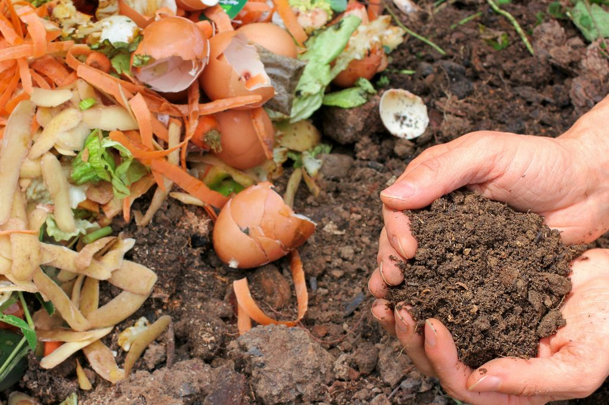
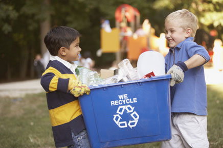
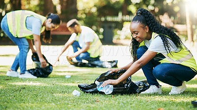

Recycling Guide
Recycling is easier when you know where different materials belong. This guide explains how to sort common household waste and how garden or food scraps can still be useful at home.


Composting
Fruit peels, vegetable scraps, dry leaves and coffee grounds can break down naturally and become compost for plants. This helps improve soil quality and provides nutrients for gardens.
Composting is simple and can be done at home or in community gardens. Instead of throwing away organic waste, gardeners can reuse it to support healthier plant growth.
Learn GardeningWaste Separation
Sorting waste properly helps recycling centres process materials more efficiently. Simple habits like rinsing containers and separating paper, plastic and metal can make recycling more effective.
Newspapers, boxes and office paper can usually be recycled when they are kept dry and clean. Flattening cardboard boxes also saves storage space during collection and transport.
Bottles, cans and glass containers should be rinsed before disposal. Removing leftover food and liquids helps ensure that recyclable materials remain usable during processing.
Batteries, light bulbs and electronic devices should not be mixed with general household waste. These items often require specialised collection points for safe disposal and recycling.

Garden Waste
Leaves, branches and plant cuttings can be reused in compost piles or spread around plants as mulch. These materials help soil stay moist and support healthier garden growth.
Reusing garden waste is a simple way to keep gardens clean while making use of natural materials that would otherwise be thrown away.
Get InvolvedWaste Sorter
Pick an item and we'll tell you exactly which bin it belongs in.